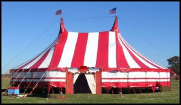

There doesn't appear to be a documented way to do this but in SugarCRM 7 this is how I've added actions to the listview. For this example it's showing how to add a button to an animal module, which adds the animal to a related circus event.
This first thing you need to do is copy the global recordlist.php file into your module and create a custom recordlist.php which overrides the existing one. You can copy the base one SugarCRM has or simply take this file below and alter the add_to_circus button. Note the addtocirus:fire action, we will create javascript code that is called when this event is fired. This code should go into custom/module/animals/clients/base/views/recordlist/recordlist.php
if (!defined('sugarEntry') || !sugarEntry) {
die('Not A Valid Entry Point');
}
/*********************************************************************************
* By installing or using this file, you are confirming on behalf of the entity
* subscribed to the SugarCRM Inc. product ("Company") that Company is bound by
* [http://www.sugarcrm.com/master-subscription-agreement](http://www.sugarcrm.com/master-subscription-agreement)
*
* If Company is not bound by the MSA, then by installing or using this file
* you are agreeing unconditionally that Company will be bound by the MSA and
* certifying that you have authority to bind Company accordingly.
*
* Copyright © 2004–2014 SugarCRM Inc. All rights reserved.
********************************************************************************/
$viewdefs['CSTM_ANIMALS']['base']['view']['recordlist'] = array(
'selection' => array(
'type' => 'multi',
'actions' => array(
array(
'name' => 'edit_button',
'type' => 'button',
'label' => 'LBL_MASS_UPDATE',
'primary' => true,
'events' => array(
'click' => 'list:massupdate:fire',
),
'acl_action' => 'massupdate',
),
array(
'name' => 'merge_button',
'type' => 'button',
'label' => 'LBL_MERGE',
'primary' => true,
'events' => array(
'click' => 'list:mergeduplicates:fire',
),
'acl_action' => 'edit',
),
array(
'name' => 'calc_field_button',
'type' => 'button',
'label' => 'LBL_UPDATE_CALC_FIELDS',
'events' => array(
'click' => 'list:updatecalcfields:fire',
),
'acl_action' => 'massupdate',
),
array(
'name' => 'addtolist_button',
'type' => 'button',
'label' => 'LBL_ADD_TO_PROSPECT_LIST_BUTTON_LABEL',
'primary' => true,
'events' => array(
'click' => 'list:massaddtolist:fire',
),
'acl_module' => 'ProspectLists',
'acl_action' => 'edit',
),
array(
'name' => 'delete_button',
'type' => 'button',
'label' => 'LBL_DELETE',
'acl_action' => 'delete',
'primary' => true,
'events' => array(
'click' => 'list:massdelete:fire',
),
),
array(
'name' => 'export_button',
'type' => 'button',
'label' => 'LBL_EXPORT',
'acl_action' => 'export',
'primary' => true,
'events' => array(
'click' => 'list:massexport:fire',
),
),
array(
'name' => 'add_to_circus_button',
'type' => 'button',
'label' => 'LBL_ADD_TO_FAIR',
'acl_action' => 'edit',
'primary' => true,
'events' => array(
'click' => 'list:addtocircus:fire',
),
),
),
),
);
This is an example of the JS code you could call when the event has custom/modules/animals/clients/base/views/recordlist/recordlist.js. On initialise we simply set a new context.on that calls your js modules function.
({
//add listener for custom button
this.context.on('list:addtocircus:fire', this.add_to_circus, this);
},
add_to_circus : function() {
var idCSV = '';
var selector = 'CSTM_ANIMALS_';
// I'm sure there's a better way to do this, but not documented or found anywhere.
$('input[type=checkbox]:checked').closest('[name^='+selector+']').each(function(){
idCSV += $(this).attr('name').substring(selector.length) + ',';
});
$.ajax({
if(errorResponse != '') {
app.alert.show('bad-add-to-circus', {
});
}
}
});
},
})
Now there's a few caveats with this code.
Any questions feel free to ask!